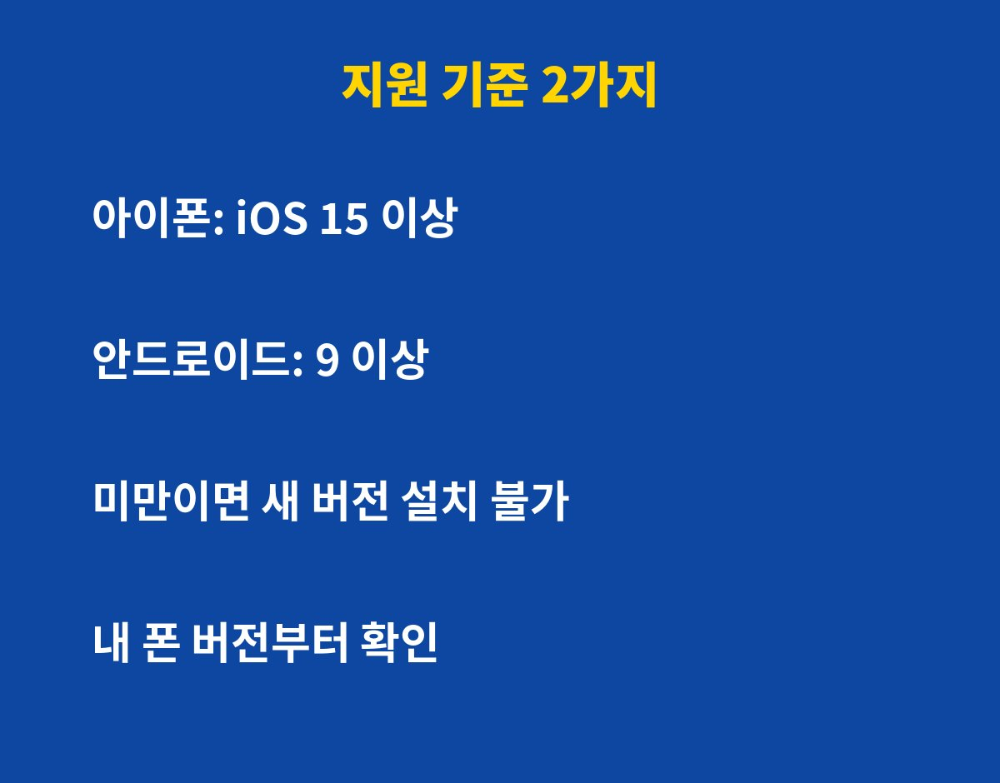
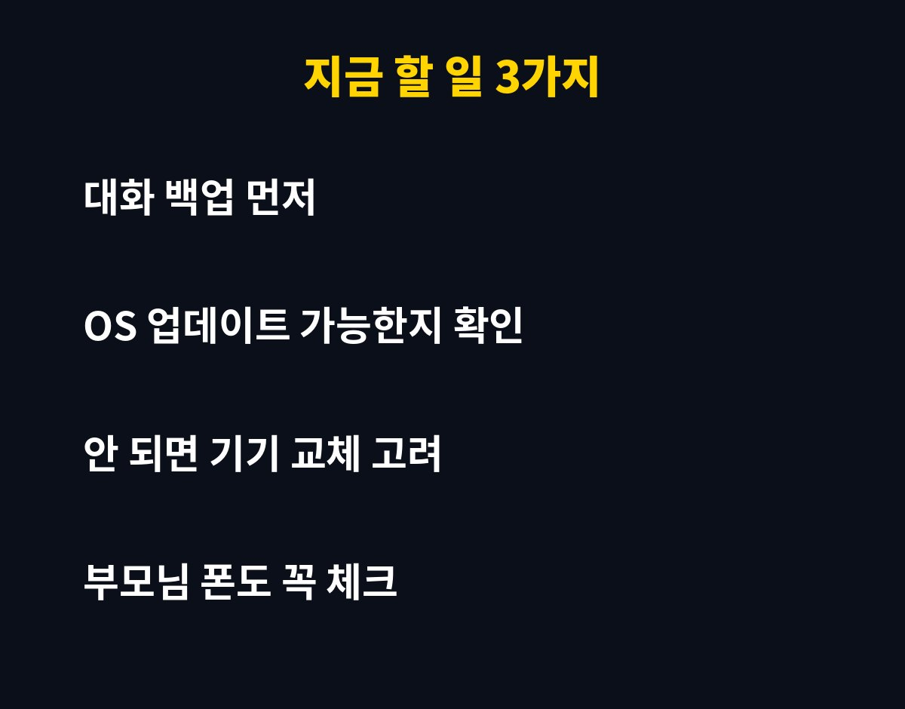

카톡 구형폰 쓰고 계신다면 지금 바로 OS 버전부터 확인하셔야 해요. 카카오톡이 iOS 15·안드로이드 9 이상에서만 업데이트를 지원하기로 했는데, 부모님 폰이 여기에 걸리는지 궁금하지 않으세요?
카카오는 앞으로 카카오톡 새 버전을 아이폰은 iOS 15 이상, 안드로이드는 9 이상 기기에만 제공한다고 공지했어요. 이 기준보다 낮은 운영체제를 쓰는 폰은 새 버전을 받을 수 없게 되는 거죠.
당장 앱이 꺼지는 건 아니지만, 새 기능이나 보안 패치를 못 받게 돼요. 시간이 지나면 일부 기능이 제대로 안 돌아갈 수도 있고요. 결국 "쓰던 폰 그대로 쓰면 되겠지" 했다가 낭패 볼 수 있다는 얘기예요.
| 구분 | 계속 업데이트 | 업데이트 중단 |
|---|---|---|
| 아이폰 | iOS 15 이상 | iOS 15 미만 |
| 안드로이드 | 안드로이드 9 이상 | 안드로이드 9 미만 |

아이폰은 설정 → 일반 → 정보에서 iOS 버전을 볼 수 있어요. 갤럭시 같은 안드로이드 폰은 설정 → 휴대전화 정보 → 소프트웨어 정보에 들어가면 안드로이드 버전이 나와요.
여기서 숫자가 기준보다 낮다면 먼저 OS 업데이트가 가능한지 확인해 보세요. 설정에서 소프트웨어 업데이트를 눌렀을 때 새 버전이 뜨면 올리면 끝이에요. 문제는 제조사 지원이 이미 끝나서 더 이상 올라가지 않는 폰이에요.
가장 먼저 할 일은 대화 백업이에요. 카카오톡 설정의 채팅 메뉴에서 대화 백업을 해 두면, 나중에 새 폰으로 옮겨도 대화를 되살릴 수 있어요. 이걸 미루다가 폰이 고장 나면 소중한 사진과 대화가 한 번에 날아갈 수 있어요.
그다음은 기기 교체를 천천히 고민해 보는 거예요. 꼭 최신 플래그십일 필요는 없고, 지원 기준을 넘는 중고폰이나 보급형 폰으로도 충분해요. 보안 업데이트가 끊긴 폰으로 금융 앱까지 쓰는 건 위험하니 이참에 정리하는 것도 방법이에요.

이번 변경에 가장 많이 걸리는 건 오래 쓴 효도폰이나 공기계예요. 부모님은 카톡이 갑자기 이상해져도 원인을 모르고 그냥 넘기시는 경우가 많아요. 다음에 뵐 때 폰 버전 한 번만 봐 드려도 큰 불편을 막을 수 있어요.
정리하면 버전 확인 → OS 업데이트 → 안 되면 백업 후 교체 순서예요. 5분이면 끝나니까 오늘 바로 해 보세요.
이런 IT 꿀팁을 놓치기 싫다면 구독해 두세요, 바뀌는 소식 가장 빠르게 알려드릴게요!
기사·공식 발표 기준이며 출시·가격 정보는 바뀔 수 있어요.